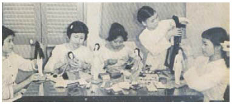

Không. Mê cung của Troisclerq không thể tóm được Jacob. Cáo ước gì anh đi xa, thật xa, và cô rất hạnh phúc được trông thấy anh. Quá đỗi hạnh phúc.
Jacob không đi một mình. Cáo chỉ nhận ra Donnersmarck khi nhìn đến lần thứ hai. Cáo luôn cho rằng em gái ông là một cô nàng ngốc nghếch vì đã để một tên yêu râu xanh dụ dỗ.
Người hầu của Troisclerq lỗi cô ra khỏi cửa sổ. Cô cắn thật sâu vào bàn tay đầy lông của hắn để tự thoát thân, dù hàm răng người của cô ít sắc bén hơn nhiều so với răng cáo. Cái bình đã đầy phân nửa. Cáo đẩy nó rơi xuống đất trước khi tay người hầu kịp ngăn cô lại. Hắn túm lấy tóc cô và lắc cô thật thô bạo đến nỗi cô không thở được. Cô chẳng quan tâm. Nỗi sợ hãi của cô đang chảy thành dòng trắng xóa trên mặt bàn. Jacob ở đây và cả hai người bọn họ đều còn sống.
“Anh ta thật sự tài giỏi như người ta vẫn nói. Không phải là ta nghi ngờ điều đó.” Troisclerq đứng ở ngưỡng cửa. Hắn bước đến bên bàn và dùng tay không hứng lấy những giọt chất lỏng đang chảy xuống từ mấy cái đĩa.
Hắn ta trông không có vẻ lo lắng vì Jacob đã thoát khỏi mê cung của hắn.
“Ngươi không thể giết anh ấy!” Cô nghĩ gì vậy? Rằng chỉ cần nói đủ to thì lời nói sẽ biến thành sự thật ư? Cáo cảm thấy nỗi sợ hãi đã quay trở lại.
Troisclerq chạm vào thứ chất lỏng trắng trong tay. “Chúng ta sẽ xem.” Hắn ta gật đầu với tay người hầu. “Mang cô ta đến chỗ những kẻ kia.”
Cáo thét gọi tên Jacob trong lúc tay người hầu lôi cô đi dọc hành lang. Để làm gì chứ. Để cảnh báo anh, để gọi anh, để cuộn mình trong tên anh như cái cách cô cuộn mình trong bộ lông mà tên yêu râu xanh đã đánh cắp? Đừng gọi anh ấy, Cáo!
Tay người hầu đứng khựng lại.
Mang cô ta đến chỗ những kẻ kia.
Cánh cửa trông không khác gì những cánh cửa còn lại, nhưng Cáo có thể đánh hơi thấy mùi chết chóc đằng sau cánh cửa ấy rõ như thể có máu đang thật sự trườn qua gỗ đen.
“Cô để quên một thứ.” Troisclerq đứng sau lưng cô. Hắn ta giơ cao chùm chìa khóa mà hắn đặt cạnh đĩa của cô. Có lẽ hắn muốn thấy tay cô run rẩy thế nào khi tra chiếc chìa khóa vàng vào ổ.
Jacob đã không để cô vào trong ngôi nhà nơi yêu râu xanh giết em gái của Donnersmarck. Cáo chế giễu anh vì điều đó. Cáo cái đã bị giết quá nhiều lần nên không còn run sợ trước cái chết, vậy mà viễn cảnh đang chờ cô phía sau cánh cửa làm cô kinh sợ.
Tay thợ săn này không để những nạn nhân của hắn ra đi.
Chín phụ nữ. Họ treo lủng lẳng trên những sợi xích vàng như những con rối dễ sợ, bị chính nỗi sợ hãi của họ giết chết. Những đôi mắt trống rỗng, nhưng nỗi kinh hoàng vẫn mãi mãi khắc ghi trên những khuôn mặt tái nhợt. Kẻ sát nhân bảo quản họ trong căn Phòng Đỏ của hắn như bảo quản trang sức trong rương. Những mảnh hân hoan còn sót lại bị đông cứng mà họ đã mang lại cho hắn, sự sống mà họ đã trao cho hắn, và thứ tình yêu đã dẫn dụ họ đến bên hắn.
Tay người hầu quấn sợi xích vàng quanh cổ và cổ tay Cáo như thể hắn muốn trang điểm cô một lần cuối cho Troisclerq. Không còn nhiều chỗ trống trong ngôi nhà búp bê kinh khủng của hắn. Cùi chỏ cô chạm phải cánh tay của những cô gái đã chết treo lủng lẳng bên cạnh cô. Lạnh ngắt, nhưng vẫn còn rất xinh đẹp.
“Họ không để tôi đi.” Troisclerq đặt chiếc bình rỗng không lên mặt bàn trước cửa sổ phủ vải liệm. “Họ trở thành một phần của tôi, có lẽ chính vì vậy mà tôi giết họ... để thoát khỏi họ. Nhưng họ vẫn ở đó, câm lặng và cứng đờ, và nhắc nhớ tôi. Về giọng nói của họ. Về hơi ấm mà làn da họ đã từng mang…”
Ngọn đèn khí gas đang thắp sáng căn phòng hắt bóng những cô gái đã chết lên bức tường đỏ. Cáo nhìn bóng mình giữa những chiếc bóng ấy. Cô đã là một trong số bọn họ rồi.
Troisclerq bước đến bên cô. “Cái chết của hắn còn làm cô lo sợ hơn cái chết của chính bản thân mình sao?”
“Không,” Cáo chẳng quan tâm liệu hắn có biết cô đang nói dối không. “Anh ấy sẽ giết ngươi. Vì ta. Và vì tất cả những cô gái khác nữa.”
“Đã có nhiều người cố làm điều đó rồi.” Troisclerq gật đầu ra hiệu cho tay người hầu. “Mang hắn ta đến cho ta,” hắn nói. “Chỉ mình hắn thôi.”
Rồi hắn tựa lưng vào bức tường phủ lụa, căn phòng mang sắc lụa đỏ như màu cơ quan nội tạng động vật đầy máu. Hắn chờ đợi.
Cáo nhìn nỗi sợ hãi của mình đang chảy trong bình.